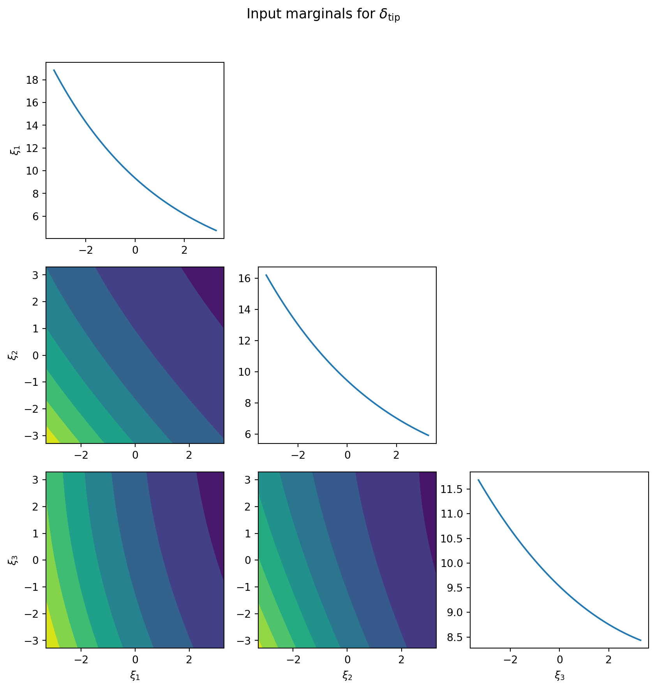
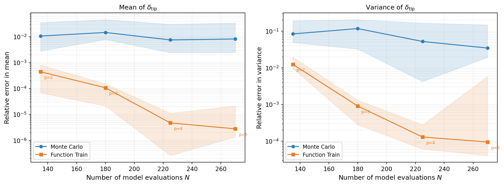

import numpy as np
import matplotlib.pyplot as plt
from pyapprox.util.backends.numpy import NumpyBkd
from pyapprox.benchmarks.instances.pde.cantilever_beam import (
cantilever_beam_1d,
)
from pyapprox.probability import GaussianMarginal
from pyapprox.surrogates.functiontrain import (
ALSFitter,
PCEFunctionTrain,
create_pce_functiontrain,
)
from pyapprox.surrogates.functiontrain.statistics.moments import (
FunctionTrainMoments,
)
bkd = NumpyBkd()
benchmark = cantilever_beam_1d(bkd, num_kle_terms=3)
model = benchmark.function()
prior = benchmark.prior()
marginals = prior.marginals() # three GaussianMarginals
nvars = model.nvars()
qoi_label = r"$\delta_{\mathrm{tip}}$"
# Training data
N_train = 270
np.random.seed(42)
samples_train = prior.rvs(N_train)
values_train = model(samples_train)[:1, :] # keep tip deflection only, (1, N_train)
# Build and fit a rank-3, degree-5 FT
ft_raw = create_pce_functiontrain(
marginals, max_level=5, ranks=[3, 3], bkd=bkd
)
als = ALSFitter(bkd, max_sweeps=50, tol=1e-14)
ft = als.fit(ft_raw, samples_train, values_train).surrogate()
# Wrap in PCEFunctionTrain for analytical UQ
pce_ft = PCEFunctionTrain(ft)UQ with Function Trains
PyApprox Tutorial Library
Extract analytical moments, marginal densities, and input marginals from a fitted function train.
TipDownload Notebook
Learning Objectives
After completing this tutorial, you will be able to:
- Compute the mean and variance of a QoI analytically from a fitted function train
- Explain why independence across cores and PCE orthonormality make these formulas exact
- Marginalize a function train analytically to visualize main effect functions and pairwise input interactions
- Compare FT-based and Monte Carlo moment estimates at the same computational budget
Prerequisites
Complete An Introduction to Function Trains before this tutorial.
Setup: Fit a Function Train
We use a 1D Euler–Bernoulli cantilever beam with spatially varying bending stiffness \(EI(x)\) parameterized by a 3-term Karhunen–Lo`eve expansion. The three KLE coefficients \(\xi_1, \xi_2, \xi_3 \sim \mathcal{N}(0,1)\) are the uncertain inputs. We work with a single QoI — tip deflection \(\delta_{\mathrm{tip}}\) — since the function train currently supports \(\mathrm{nqoi} = 1\).
Analytical Moments
Why Statistics Factorize Across Cores
A function train evaluates as a product of core matrices:
\[ f(\boldsymbol{\xi}) = \mathbf{G}_1(\xi_1)\cdot\mathbf{G}_2(\xi_2)\cdots\mathbf{G}_d(\xi_d) \]
Because the input variables \(\xi_1, \ldots, \xi_d\) are mutually independent, the expectation of this product factorizes across cores. For the mean:
\[ \mathbb{E}_{\boldsymbol{\xi}}[f(\boldsymbol{\xi})] = \mathbb{E}_{\xi_1}[\mathbf{G}_1(\xi_1)] \cdot \mathbb{E}_{\xi_2}[\mathbf{G}_2(\xi_2)] \cdots \mathbb{E}_{\xi_d}[\mathbf{G}_d(\xi_d)] = \boldsymbol{\mu}_1 \cdot \boldsymbol{\mu}_2 \cdots \boldsymbol{\mu}_d \]
where \(\boldsymbol{\mu}_k = \mathbb{E}[\mathbf{G}_k(\xi_k)]\) is a constant matrix containing the expected value of each entry. Each entry is a PCE, and by orthonormality only the constant term \(\psi_0 = 1\) survives the expectation:
\[ \mathbb{E}\!\left[\sum_{n=0}^{p} c_{ij,n}^{(k)}\, \psi_n(\xi_k)\right] = c_{ij,0}^{(k)} \]
So \(\boldsymbol{\mu}_k\) is simply the matrix of zeroth PCE coefficients of core \(k\), and the mean of the FT is a chain of ordinary matrix multiplications applied to these constant matrices.
Mean and Variance
moments = FunctionTrainMoments(pce_ft)
ft_mean = bkd.to_numpy(moments.mean()) # scalar (nqoi=1)
ft_var = bkd.to_numpy(moments.variance()) # scalar
ImportantWhy are these exact?
These formulas compute the moments of the surrogate \(\hat{f}\), not the true model \(f\). They are exact for the fitted FT. The only source of error is the quality of the surrogate approximation itself.
How Variance is Computed
For variance, independence across cores means we need:
\[ \mathbb{E}_{\boldsymbol{\xi}}\!\left[f(\boldsymbol{\xi})^2\right] = \prod_{k=1}^{d} \left\langle \mathbf{G}_k \otimes \mathbf{G}_k \right\rangle \]
where \(\langle \mathbf{G}_k \otimes \mathbf{G}_k \rangle\) is the Gram matrix of core \(k\) — the matrix of inner products between all pairs of entries. By PCE orthonormality, \(\mathbb{E}[\psi_m(\xi_k)\,\psi_n(\xi_k)] = \delta_{mn}\), so:
\[ \left\langle g_{ij}^{(k)},\, g_{i'j'}^{(k)} \right\rangle = \mathbb{E}\!\left[g_{ij}^{(k)}(\xi_k)\, g_{i'j'}^{(k)}(\xi_k)\right] = \sum_{n=0}^{p} c_{ij,n}^{(k)}\, c_{i'j',n}^{(k)} \]
Each Gram matrix reduces to a dot product of coefficient vectors — no quadrature required. The full variance then follows as: \(\mathrm{Var}[f] = \mathbb{E}[f^2] - (\mathbb{E}[f])^2\).
The key take-away is that both the mean and variance computations reduce to matrix-vector operations on the stored PCE coefficients, with no additional model evaluations and no numerical integration.
Marginal Plots via FT Marginalization
The Core Idea
For a PCE, marginalizing out variable \(\xi_k\) is analytical: only terms where the marginalized variable has degree zero survive, because \(\mathbb{E}[\psi_n(\xi_k)] = 0\) for \(n \geq 1\). The function train inherits this property at the core level.
To compute the main effect function \(\mathbb{E}_{\boldsymbol{\xi}_{-k}}[f \mid \xi_k]\) — the expected output as a function of \(\xi_k\) alone — we replace every core except core \(k\) with its mean matrix \(\boldsymbol{\mu}_j = \mathbb{E}[\mathbf{G}_j(\xi_j)]\) (the matrix of zeroth coefficients). The result is a rank-\(r\) 1D function of \(\xi_k\) only:
\[ \mathbb{E}_{\boldsymbol{\xi}_{-k}}[f \mid \xi_k] = \boldsymbol{\mu}_1 \cdots \boldsymbol{\mu}_{k-1} \cdot \mathbf{G}_k(\xi_k) \cdot \boldsymbol{\mu}_{k+1} \cdots \boldsymbol{\mu}_d \]
Similarly, the pairwise marginal \(\mathbb{E}_{\boldsymbol{\xi}_{-\{i,j\}}}[f \mid \xi_i, \xi_j]\) keeps cores \(i\) and \(j\) live and replaces all other cores with their mean matrices. No numerical integration is needed at any stage.
from pyapprox.surrogates.functiontrain import FTDimensionReducer
from pyapprox.interface.functions.plot.pair_plot import PairPlotter
# Build plot limits from the 99.9th percentile of each marginal
plot_limits = np.zeros((nvars, 2))
for ii, m in enumerate(marginals):
interval = bkd.to_numpy(m.interval(0.999))
plot_limits[ii, 0] = interval[0, 0]
plot_limits[ii, 1] = interval[0, 1]
plot_limits_arr = bkd.asarray(plot_limits)
variable_names = [rf"$\xi_{{{ii+1}}}$" for ii in range(nvars)]
reducer = FTDimensionReducer(pce_ft, bkd)
plotter = PairPlotter(reducer, plot_limits_arr, bkd,
variable_names=variable_names)
fig, axes = plotter.plot(npts_1d=61, contour_kwargs={"cmap": "viridis"})
fig.suptitle(f"Input marginals for {qoi_label}", fontsize=13, y=1.02)
plt.tight_layout()
plt.show()
The diagonal panels reveal which inputs have strong main effects on tip deflection. Off-diagonal contour panels reveal where pairs of inputs interact: parallel contour lines indicate near-additive behaviour, while curved or skewed contours indicate genuine nonlinear interaction between variables.
NoteComparison with PCE Marginalization
PCE marginalization works by zeroing out basis terms that involve the marginalized variable. FT marginalization works by replacing full core matrices with their constant (mean) counterparts. Both approaches are exact for the respective surrogate, both require zero additional model evaluations, and both produce the same grid of 1D and 2D plots via PairPlotter.
FT vs. Monte Carlo: Efficiency Comparison
We now compare the efficiency of FT-based moment estimation against direct MC. The question is: for a fixed budget of \(N\) beam evaluations, which approach gives a more accurate estimate of the mean and variance?
For MC, all \(N\) samples are used directly. For the FT, we keep the rank fixed at 3 and increase the polynomial degree with the budget, maintaining an oversampling ratio of 3 (three times as many samples as FT parameters). As the budget grows, the higher-degree FT captures more of the model’s structure, so the FT error decays faster than MC.
NoteRank 3 in 3D is a full tensor product
With \(d = 3\) variables and rank \(r = 3\), the FT can represent any degree-\(p\) tensor-product polynomial exactly. The convergence rate is therefore controlled entirely by the polynomial degree, not the rank. For higher-dimensional problems, the rank would need to grow or be chosen carefully to capture cross-variable interactions.
Figure 2 repeats each experiment 10 times with different random seeds and shows median error with 10th/90th percentile bands.

The FT achieves lower error than MC for the same computational budget because:
- Monte Carlo converges at the universal rate \(1/\sqrt{N}\), regardless of the function’s smoothness.
- The FT error decays at a rate determined by the smoothness of \(f\) and by the quality of the low-rank approximation. For smooth, low-rank functions — like the beam model — both the polynomial degree and the rank can be increased with the budget, driving the error down much faster than \(1/\sqrt{N}\).
- Once the surrogate is fitted, moments are computed in microseconds from the stored coefficients, with no sampling involved.
Key Takeaways
- Independence across cores means expectations factorize: the FT mean is a product of constant matrices, one per core, where each matrix holds the zeroth PCE coefficients of that core’s entries.
- PCE orthonormality within cores means inner products reduce to dot products of coefficient vectors, giving exact variance formulas with no numerical integration.
- FT marginalization is analytical: replace all cores except the variables of interest with their mean matrices to obtain exact main effect and interaction plots at zero additional model cost.
- For smooth, approximately low-rank functions, FT-based moment estimation outperforms MC at the same computational budget.
Exercises
Increase the FT rank from 3 to 5. Does the estimated mean and variance change significantly? How does the parameter count compare to a rank-3 FT at the same degree?
In the marginal plots, inspect which diagonal panels are flattest. Cross-check by computing
FunctionTrainSensitivity(moments).all_total_effects(). Do the least-important variables identified visually match those with the smallest total Sobol indices?In the convergence comparison (Figure 2), reduce the oversampling ratio from 3 to 2. How does the FT error envelope change, especially at lower degrees? Why does an insufficient oversampling ratio hurt the MSE refinement step?
Modify the convergence comparison to use a fixed rank of 5 instead of 3. How does the error change at each budget level? At what point does the higher rank stop helping, and why?
Next Steps
- UQ with Polynomial Chaos — The same UQ workflow for a standard PCE surrogate; compare moment formulas and marginalization approaches
- An Introduction to Function Trains — Build intuition for low-rank structure, cores, and the matrix-product representation